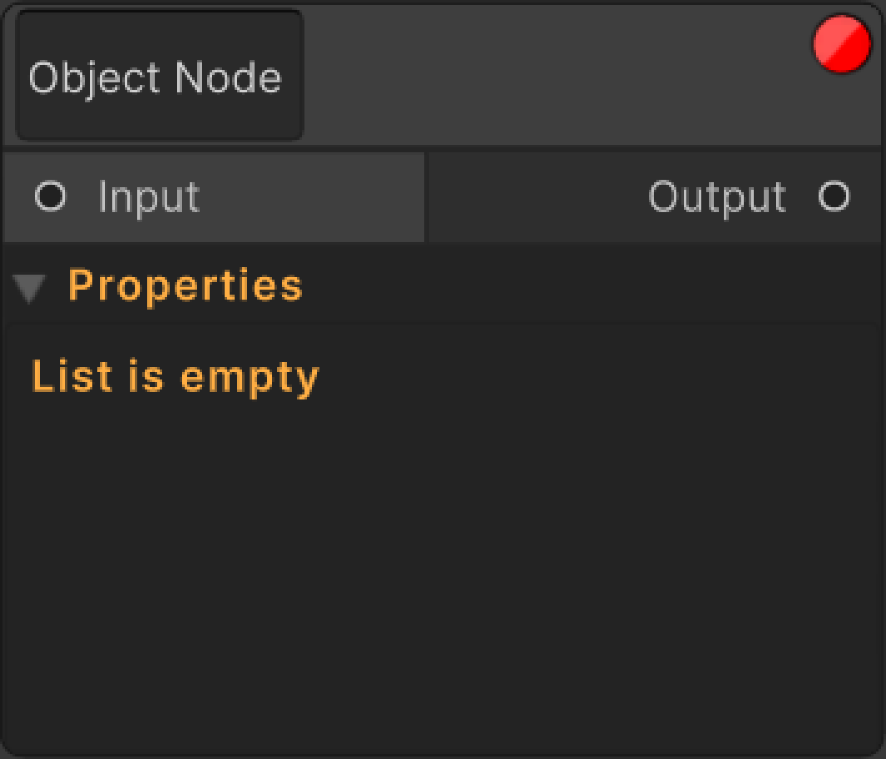
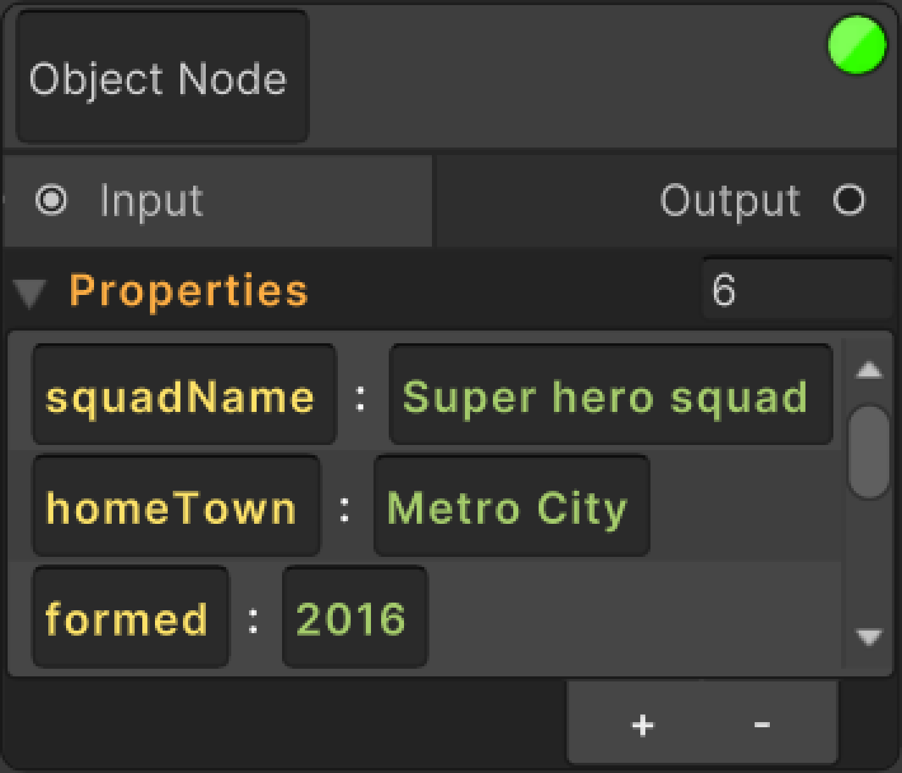

Object Node
Object node is a node that contains and manipulates JObject data.
It contains an element called Property List View and handles the operations from there.
 📝 Property List View
Property List View parses the JObject object held by the Object node and displays the JProperty objects in it in the list view.
It creates a Property block for each JProperty.
There are two different types of Property blocks.
🗂️ JObject Property
A visual element that contains 2 combinations of elements:
- Key Input Field & Value Input Field (Value Property)
- Key Input Field & Focus Button (Node Property)
The key input field is responsible for changing the key of the JProperty.
The value input field is responsible for changing the value of the JProperty.
The focus button is responsible for frame and shows you where the related node.
🗂️ Value Property
If the value in the JProperty is not JObject or JArray, but is an editable value type (float, string, int, etc.), it opens a value input field for this.
The value is manipulated with this input field.
If you want to convert the values of JProperties to JObject or JArray type, it will be converted automatically when you write [], {} in the value input field.
🗂️ Node Property
If the value in the JProperty is JObject or JArray, the value field is not created and since this property will contain children within itself, it is determined as the next node and only a focus button is placed next to the key field.
If the focus button is pressed, it frames and select the next node and shows you where the node is.
🧮 Collection Size
You can increase or decrease the number of elements in the data with the collection size section on the right of the list view.
🧮 Add Remove Buttons
When you press the Add button, i.e. " + ", a new data is created and added with a unique key and value.
When you press the Remove button, i.e. " - ", the selected elements are deleted from the data.
🧮 Index Change
You can change the index in the data by dragging the selected element in the list view to the desired index with the CTRL + Left Mouse Button Drag combination.